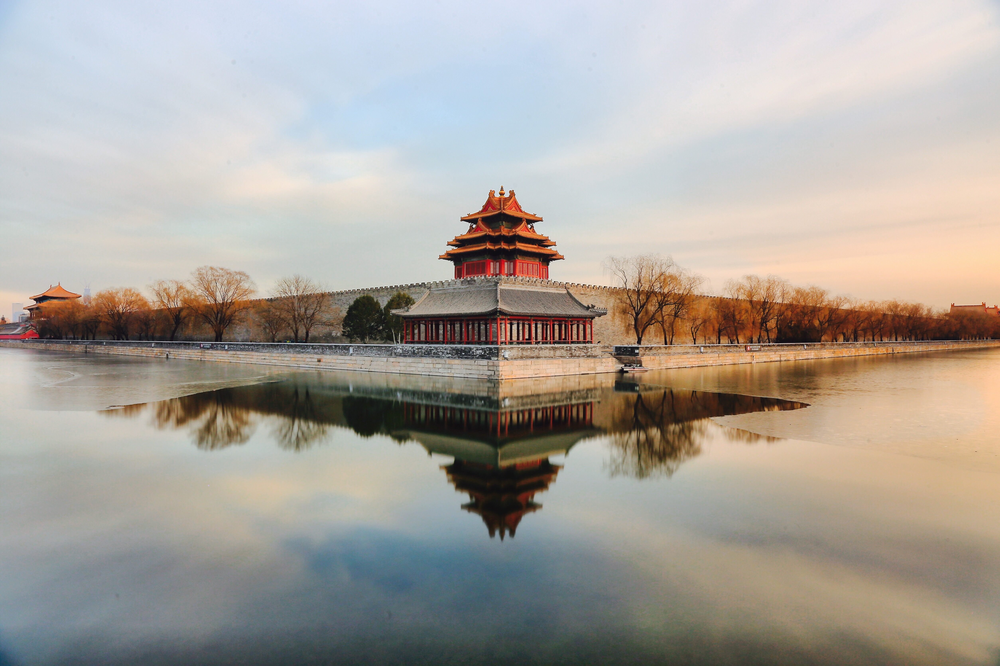

|  |
- The Forbidden City, also known as the Forbidden City, is the most complete and largest wooden structure of ancient architecture in China and the world, and is known as "the top five palaces in the world.
The Forbidden City houses a large number of precious cultural relics, millions of them according to statistics, accounting for one-sixth of the total number of cultural relics in the country.
The Forbidden City is visited from the south to the north, with the Wu Gate being the only entrance and the exit being the Donghua Gate and the Shenwu Gate.
In late spring and early summer, clusters of white pear blossoms, like clouds of snow, and the Forbidden City's red bricks and blue tiles, reflecting the interest.
|
- It is known as one of the "nine fortresses of the world", and is the essence of the Ming Great Wall, with an elevation of about 1015 meters, and is also an outpost of Juyongguan.
It is divided into two parts: the South Great Wall with 7 enemy towers and relatively few visitors, and the North Great Wall with 12 enemy towers, which is more difficult to climb.
It is a must-see place for visiting Beijing, and more than 300 world-famous people such as Nixon and Margaret Thatcher have climbed the Great Wall.
It is a 5A scenic spot, listed in UNESCO's World Cultural Heritage List, and second only to Tiananmen Square in terms of hotness.
|
 |
 |
- The Summer Palace, located in the western suburbs of Beijing, is one of the top classical Chinese gardens and was inscribed on the World Heritage List on December 2, 1998.
It is composed of Wanshou Mountain and Kunming Lake, and the whole garden is set against the backdrop of the peaks of the Western Mountains, and the buildings are integrated with the situation of the mountains and the lake, and the scenery is endlessly changing.
The whole garden is divided into three areas: the political activity area centered on Renshou Hall; the living area of the emperor and the empress with Yulantang and Leshou Hall as the main parts; and the scenic tourism area consisting of Wanshou Mountain and Kunming Lake.
In the Summer Palace's promenade, there is a dream niche purple "waterfall" with purple flowers in full bloom hanging from thin vines, which looks romantic and charming.
|
- One of the largest parks in Beijing, the park is large and has many attractions inside, making it a great place for people to relax and stroll around.
The Cherry Blossom Garden is the most famous attraction in the park, with thousands of cherry trees imported from Japan, and the grand cherry blossoms can be seen for more than a month in March and April every year, making it a perfect place for photos.
The two big lakes in the middle are East Lake and West Lake, surrounded by weeping willow trees and the TV tower in the distance is reflected in the lake, which is a very beautiful environment.
There are several docks on the lake where you can boat around, and there are also some children's entertainment facilities and a snow park in winter, making it perfect for families.
|
 |